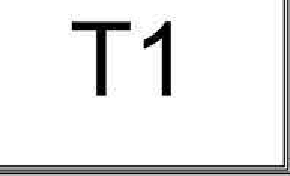

<!DOCTYPE html>
<html>

<head>
    <title>Page Title</title>
    <script src='https://cdn.jsdelivr.net/npm/tesseract.js@4/dist/tesseract.min.js'></script>
    <script src="https://www.marvinj.org/releases/marvinj-0.9.js"></script>
    <script src="https://www.marvinj.org/releases/marvinj-1.0.js"></script>

</head>

<style>
    body {
        font-size: 12px;
    }
</style>

<body>


    <!-- 
     -->

    <div style="width:601px; margin:auto">
        <canvas id="canvas_2" width="601" height="400"></canvas>
    </div>


    <script>
        var canvas2 = document.getElementById("canvas_2");

        var cpt = document.getElementById('cpt');

        //Load Passport image 
        var imagePassport = new MarvinImage();
        imagePassport.load("cpt_2.png", imagePassportLoaded);

        // Find Text regions in the passport image
        function imagePassportLoaded() {
            var segments = Marvin.findTextRegions(imagePassport, 15, 8, 30, 150);
            drawSegments(segments, imagePassport);
            imagePassport.draw(canvas2);
        }

        function drawSegments(segments, image) {
            for (var i in segments) {
                var seg = segments[i];
                // Skip segments that are too small

                // image.drawRect(seg.x1, seg.y1, seg.width, seg.height, 0xFFFF0000);
                //   image.drawRect(seg.x1, seg.y1, seg.width, seg.height, 0xFFFF0000);
                if (seg.height >= 5) {
                    image.drawRect(seg.x1, seg.y1 - 5, seg.width, seg.height + 10, 0xFFFF0000);
                    image.drawRect(seg.x1 + 1, seg.y1 - 4, seg.width - 2, seg.height + 8, 0xFFFF0000);
                }
            }
        } 
    </script>

</body>

</html>